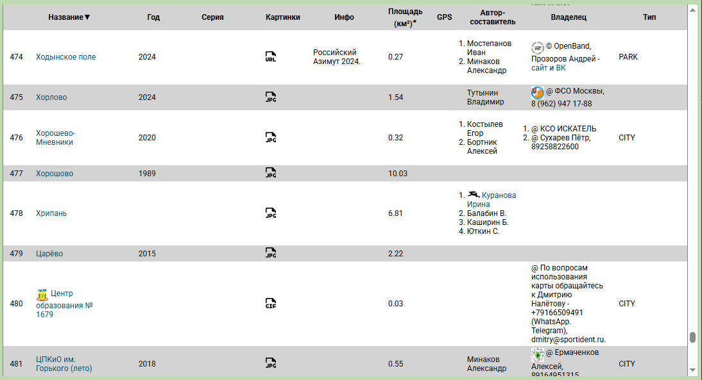
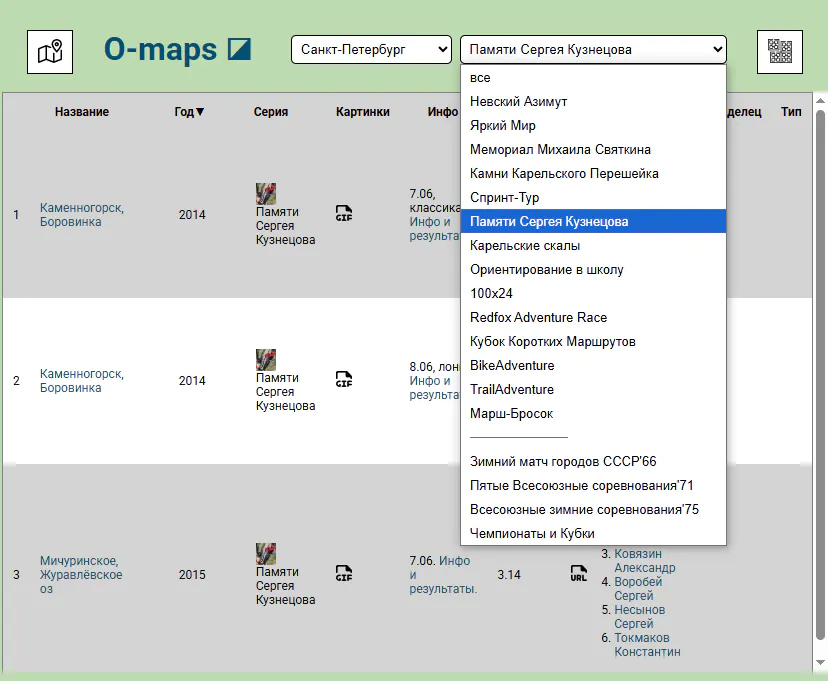
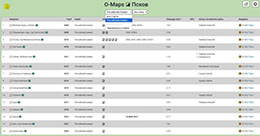
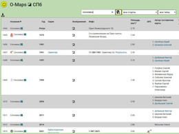

Сводные таблицы содержат практически всю информацию о картах каталога, включая и те из них, что показаны лишь в разделе "Старты на карте". Существуют как отдельные страницы для каждого региона (СПб, Москва, Башкортостан, Псков, Рязань, Самара, Белград), так и общая. Попасть на них можно по ссылке с главной страницы или нажав соответствующую кнопку на странице с картами. Кроме того, сменить регион можно с помощью выпадающего списка в заголовке страницы.
Колонки таблицы: название, год, серия стартов, изображения, информация, площадь, GPS-трансляция, автор-составитель, планировщик дистанций, владелец и тип карты. Имена авторов, планировщиков и владельцев - это ссылки, показывающие только их карты. Если по карте проводились соревнования из календаря, в информации о ней перечислены и они.
Для удобства таблицу можно отсортировать по названию карты (местности), году издания, серии стартов (названию многодневки), площади и владельцу, щёлкнув по заголовку колонки.
Важный нюанс - если карта содержит дистанцию зарегистрированного соревнования (многодневки), и год старта отличается от года издания карты, то показывается год старта.
Фильтрация

Помимо сортировки доступна фильтрация таблицы. В заголовке страницы есть два выпадающих списка: старт (показ карт с дистанциями определённых соревнований, а также «Чемпионаты и Кубки») и тип карт (город, парки, лес, вело, зимние, рельеф, фото, необычные, рогейн). Набор значений зависит от региона. Выбранные значения записываются в адрес страницы (параметры start и type), так что ссылку на отфильтрованную таблицу можно кому-то отправить. Таблицы можно открыть и с другими фильтрами из адресной строки - по автору, владельцу, планировщику, закрытым районам, OCAD-файлам и т.д. (см. параметры запуска).
 в заголовке открывает страницу с картами региона,
перенося на неё выбранные в таблице фильтры.
в заголовке открывает страницу с картами региона,
перенося на неё выбранные в таблице фильтры.
 Когда мы включаем фильтрацию, в правой части заголовка страницы появляется новая кнопка,
нажав на которую можно попасть на страничку каталога карт выбранного старта.
Когда мы включаем фильтрацию, в правой части заголовка страницы появляется новая кнопка,
нажав на которую можно попасть на страничку каталога карт выбранного старта.
Поиск и скачивание
 сохраняет таблицу в CSV-файл. Подробнее - в разделе «Работа с таблицами».
сохраняет таблицу в CSV-файл. Подробнее - в разделе «Работа с таблицами».